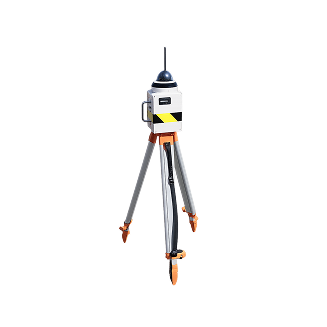
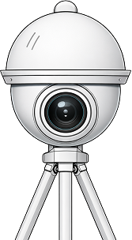
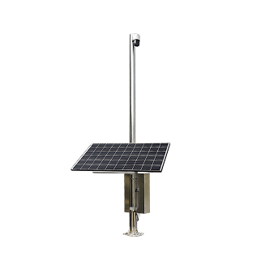
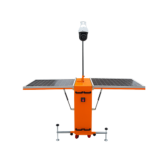
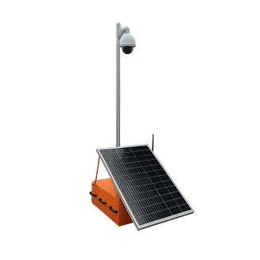
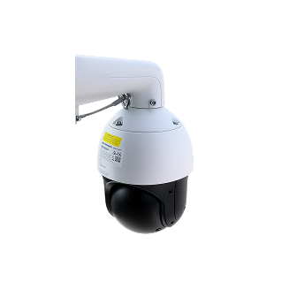
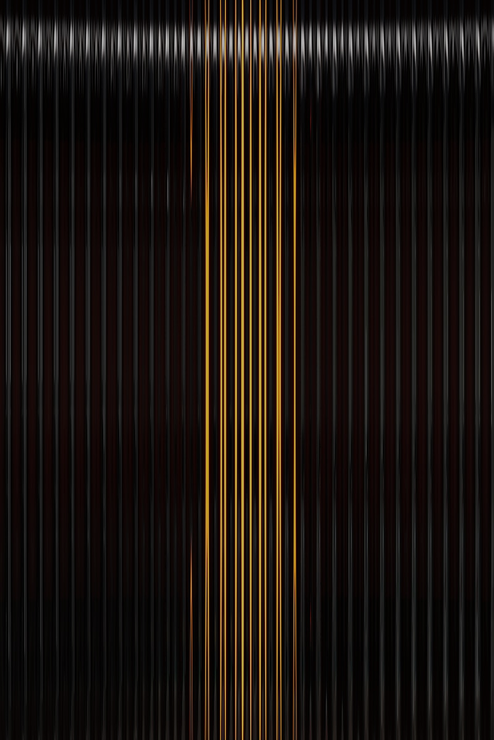
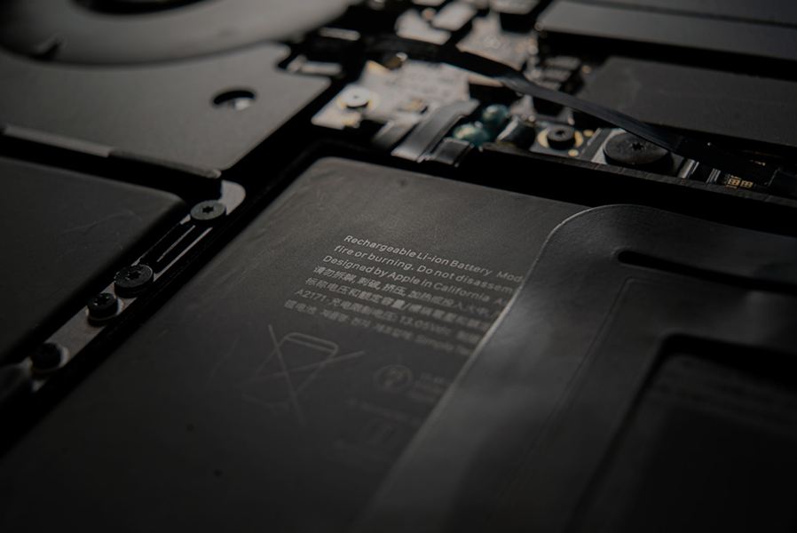
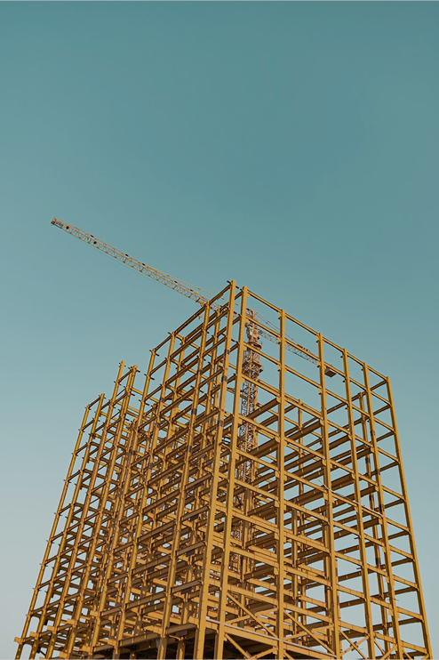

-
4배줌 이동식 CCTV
즉시 운영 가능한 All-in-One 솔루션.
전기·통신 공사 없이 배치 즉시 가동되는 독립형 시스템.
단기 현장, 초기 공정, 임시 보안 구역에서 빠른 대응 가능.- #CCTV
- #건설 현장
- #배터리
- #충전식
-
현장 조건에 최적화된

스마트 AI CCTV 5종 플랫폼 -
태양광 CCTV (독립형)
365일 무정전 운영을 위한 산업용 시스템.
전기 공급이 불가한 환경에서도 장기간 안정적으로 운영되는 완전 독립형 장기 관제 플랫폼.- #CCTV
- #건설 현장
- #태양광
- #독립형
-
이동식 태양광 CCTV (바퀴형)
공정 변화에 최적화된 Mobility 솔루션.
태양광 + 배터리 기반 365일 운영.
바퀴 이동 구조로 현장 이동성이 극대화된 산업용 플랫폼.- #CCTV
- #건설 현장
- #태양광
- #이동식
-
줌대 이동식 CCTV (독립형)
365일 무정전 운영을 위한 산업용 시스템.
전기 공급이 불가한 환경에서도 장기간 안정적으로 운영되는 완전 독립형 장기 관제 플랫폼.- #CCTV
- #건설 현장
- #길이 조정
- #이동식
-
타워크레인 CCTV
현장을 가장 넓게 조망하는 관제 지점.
실시간 모니터링, 자재 반입·반출 감시.
크레인에 설치되는 고배율 PTZ 기반 고품질 영상 관제 시스템.- #CCTV
- #건설 현장
- #크레인
- #고품질
현장 조건에 최적화된
스마트 AI CCTV 5종 플랫폼
넥스트랩이 제공하는
산업 맞춤형 기술 경쟁력
자세히 보기

전기 공사 불필요 
지속 관제 
다양한 현장 대응 

문의 및 기술 지원
 현장 환경 분석
현장 환경 분석
현장 환경 분석부터 맞춤 설계까지 One-Stop 지원
넥스트랩은 현장별 환경을 정밀하게 분석해 카메라 스펙, 배터리 용량, AI 옵션, 설치 위치까지 최적의 시스템을 제안드립니다.